第七版渡鸦 · 四端接入对比
真实组件前后使用相同内容、尺寸和主题。导航、标题栏、登录、官网、桌面选择页均使用同一 BrandMark；小程序来自实际 Taro H5 构建。图标资源对比读取仓库文件。系统原生窗口、fnOS 和微信真机尚未验收。
查看实际平台资源 / 小程序圆形安全区 · 覆盖清单、复现方法与验证边界
共享组件 · 浅色

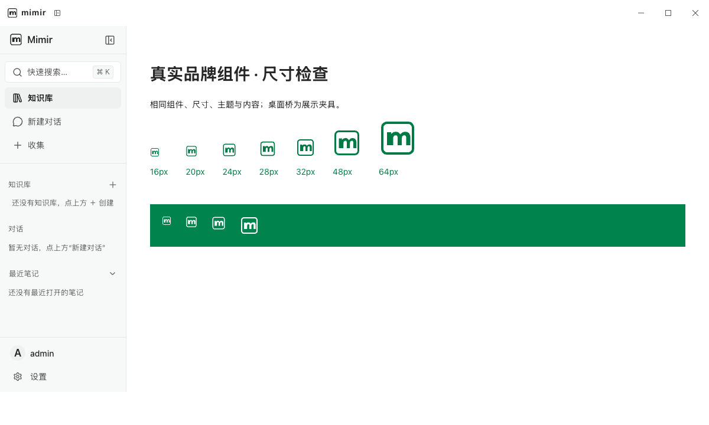

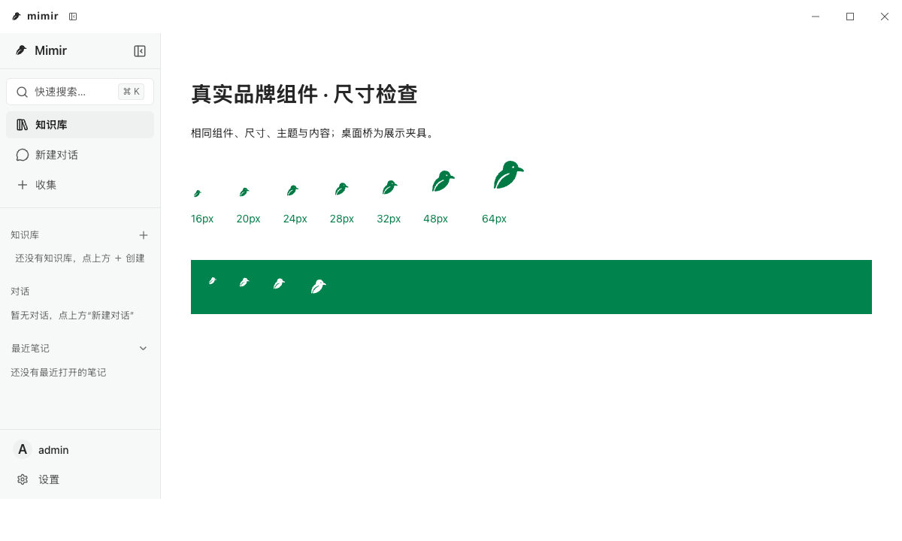
共享组件 · 深色

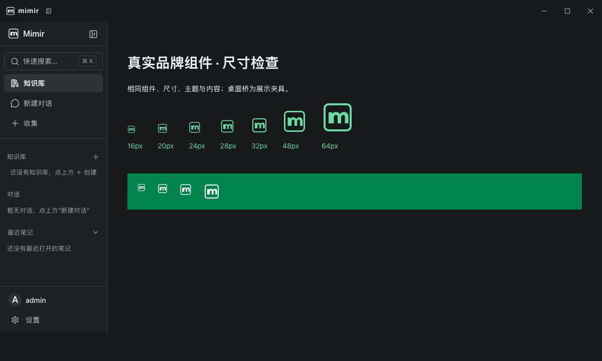

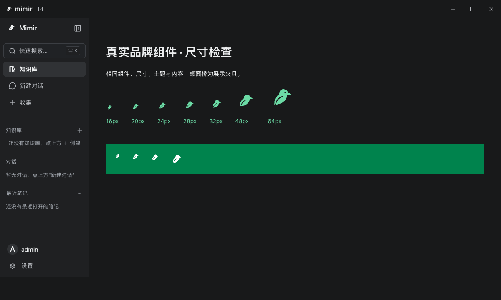
官网 · 浅色


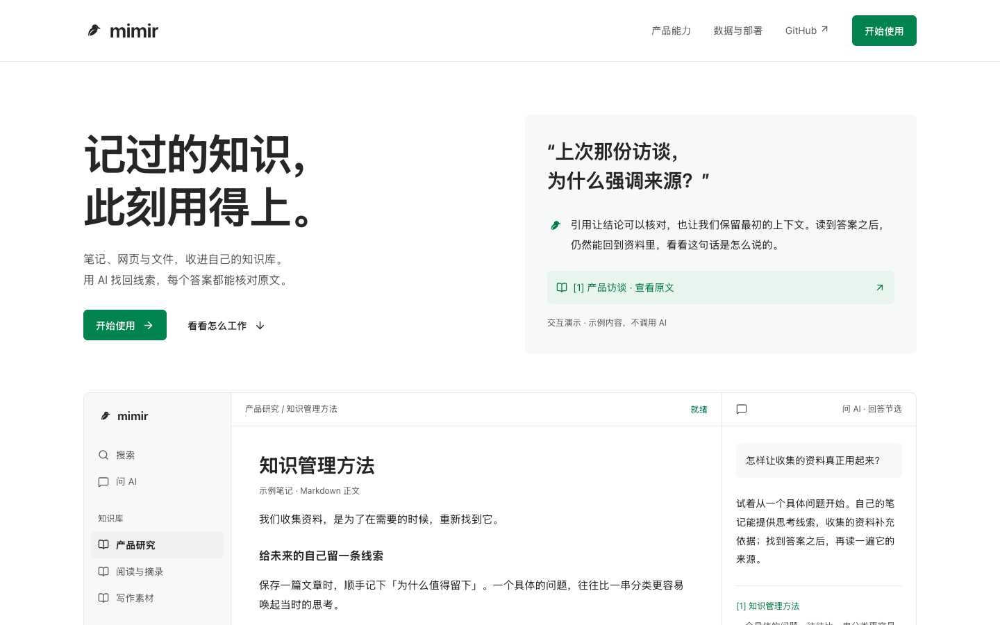
官网 · 深色

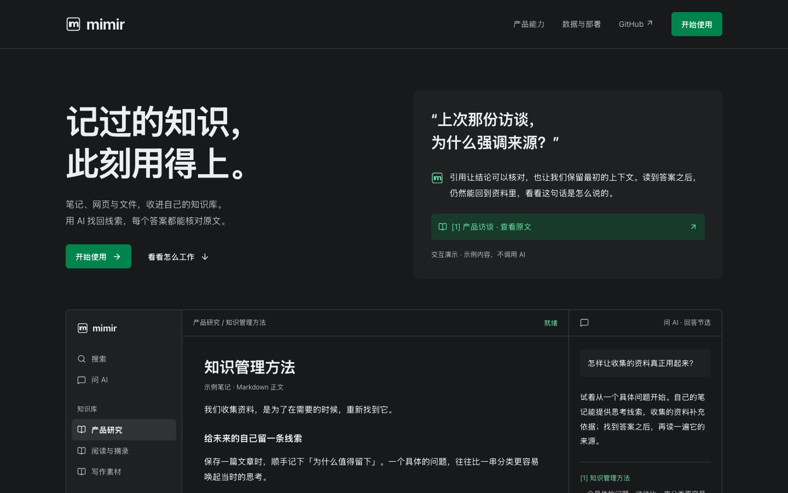

登录 · 浅色 / 390px

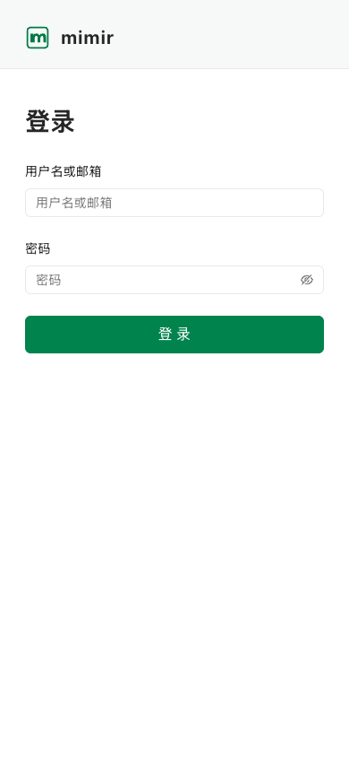

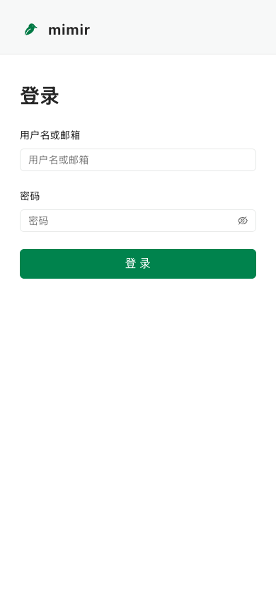
登录 · 深色 / 390px

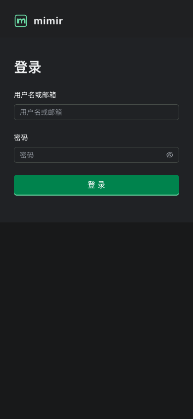

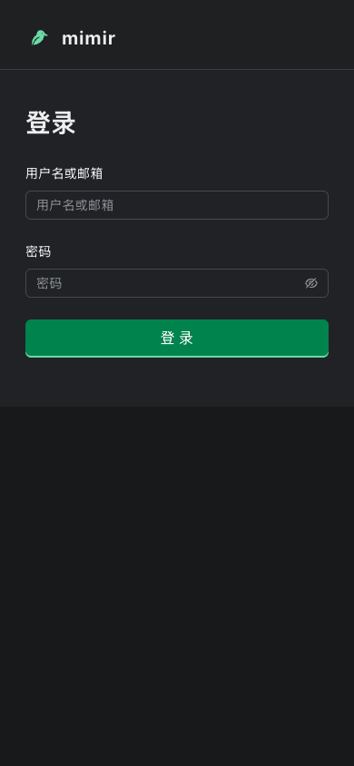
桌面选择页 · 浅色

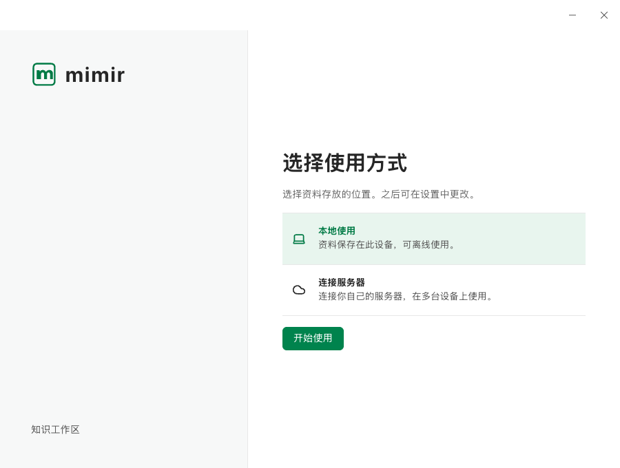

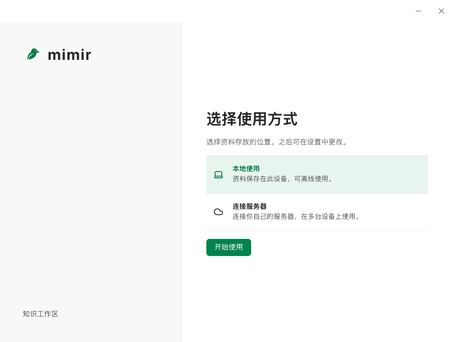
桌面选择页 · 深色

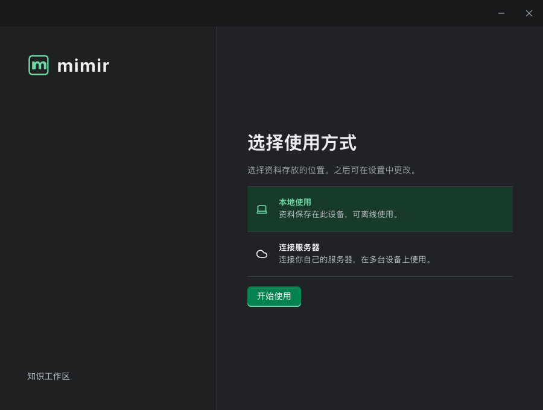

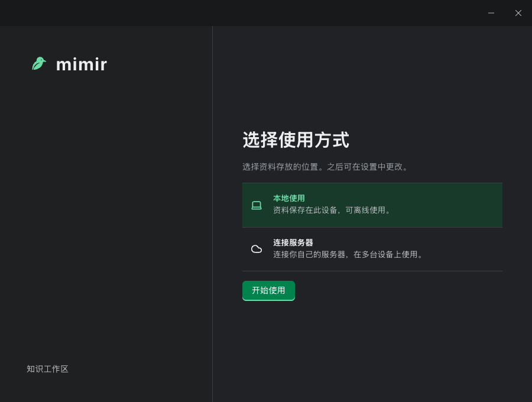
小程序 Gate · Taro H5

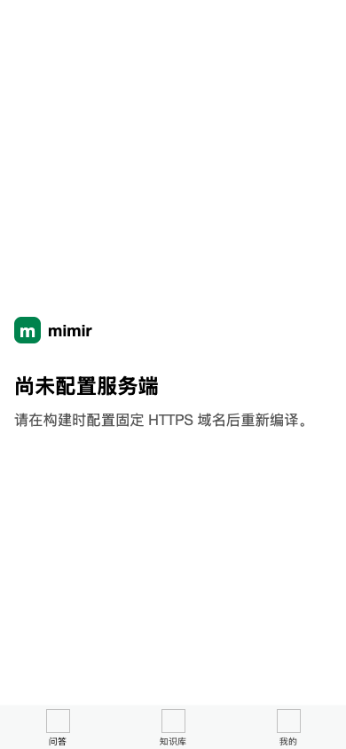

小程序登录 · Taro H5


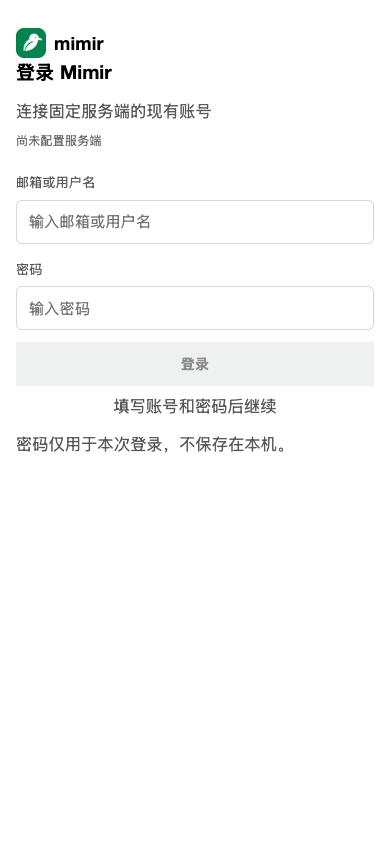